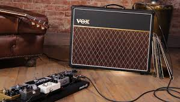
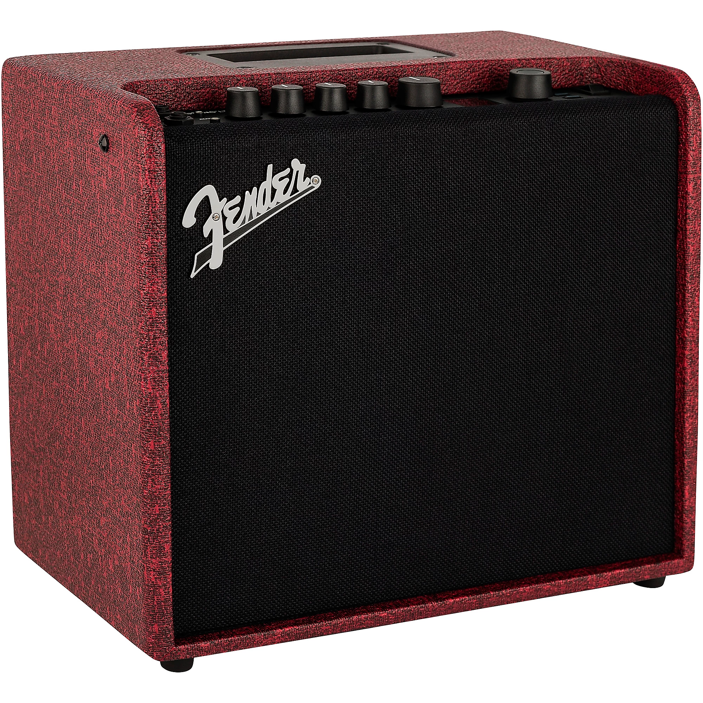
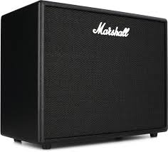
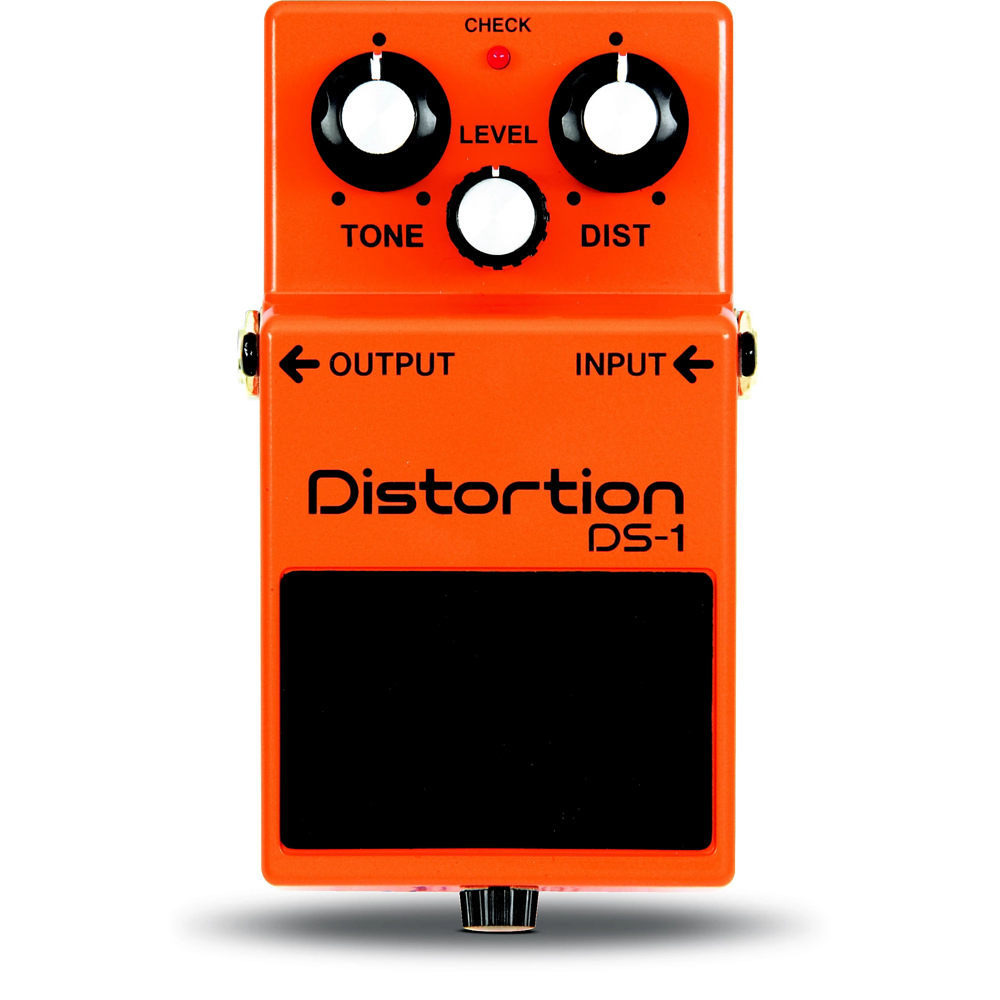
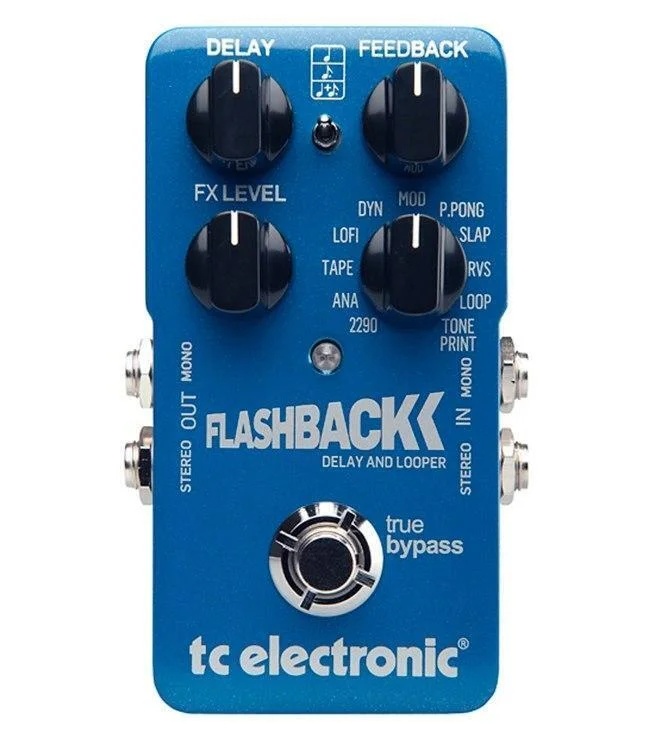
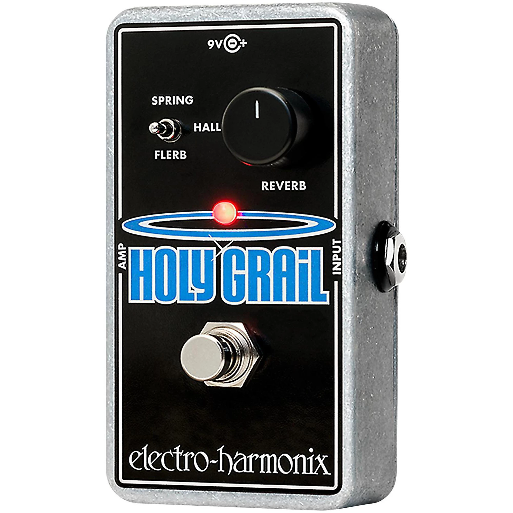

Electric and acoustic-electric guitars are equipped with a pickup. The amplifier takes the signal, sends it through a circuit and makes it louder as it passes through the speaker. This arrangement not only gives your electric guitar a voice, but also opportunities for distortion and tone coloring without a set of pedals.
Guitar pedals are electronic devices placed between a guitar and amplifier to alter, enhance, or manipulate the instrument's tone, volume, or signal dynamics. They allow musicians to create a wide variety of sounds—from subtle grit to extreme, sustained distortion—and are foot-activated for on-the-fly, hands-free control during performances.
| Image | Name | Type | Info |
|---|---|---|---|
 |
Fender Mustang LT25 | Amp | A versatile modeling amp great for beginners with built-in effects. |
 |
Marshall Code 50 | Amp | Classic Marshall tone with modern digital features and presets. |
 |
Boss DS-1 | Pedal (Distortion) | One of the most iconic distortion pedals used in rock music. |
 |
TC Electronic Flashback | Pedal (Delay) | Adds echo effects and depth to your sound with customizable settings. |
 |
Electro-Harmonix Holy Grail | Pedal (Reverb) | Creates ambient reverb effects for a fuller sound experience. |
(Click on the images in the table above for more info)